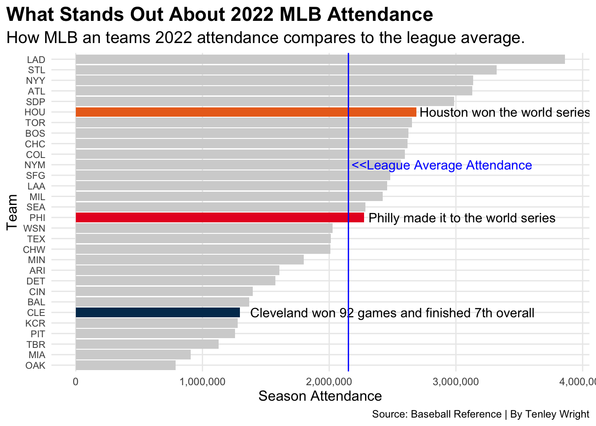

Is There a Relationship Between Attendance and Team Performance in the MLB?
Baseball
Code
Attendance
Author
Tenley Wright
Published
April 16, 2023
There are rich teams and there are poor teams.
Then there’s 50 feet of crap.
And then, finally, there’s the Oakland Athletics.
Moneyball is one of my favorite movies, and one of the themes it explores is the key components to drawing fans to games, and how to keep them coming back for more. It’s been over twenty years since Billy Beane and his front office staff tried to dig their way out of the issues in Oakland and yet somehow, after all these years, the A’s still remain underneath that same 50 feet of crap.
If you want to make a case for the A’s you could argue that perhaps it’s the fact that their comically oversized coliseum sits in one of the largest metropolitan areas in the country, yet one that is home to two baseball teams, making it the lowest population supporting two teams. However, even if you split the entire Bay Area into two halves, you still end up with a larger market than Pittsburgh, Tampa and KC.
So, is there a connection between ballpark attendance and a team’s performance? To answer that, we’ll first need to explore how each team compares to the league average attendance, as well as each other.
Code
library(tidyverse)library(scales)library(ggrepel)attendance <-read_csv("attendance21-22.csv")standings <-read_csv("mlbstandings2022.csv")teaminfo <-read_csv("mlbteaminfo.csv")combined <- attendance %>%inner_join(standings, by="Tm")combinedinfo<- combined%>%inner_join(teaminfo, by="Tm")OAK<- combinedinfo %>%filter(W <70) %>%filter(`2022 Att`<800000)MIA<-combinedinfo %>%filter(W <70) %>%filter(`2022 Att`==907487)LAD<- combinedinfo %>%filter(W >105) %>%filter(`2022 Att`>3500000)CLE <- combinedinfo %>%filter(W >90) %>%filter(`2022 Att`<2000000)TBR<- combinedinfo %>%filter(W >84) %>%filter(`2022 Att`==1128127)STL<- combinedinfo %>%filter(W >92) %>%filter(`2022 Att`==3320551)HOU<-combinedinfo %>%filter(W ==106) %>%filter(`2022 Att`>2000000)NYY<-combinedinfo %>%filter(W ==99) %>%filter(`2022 Att`==3136207)PHI<-combinedinfo %>%filter(W ==87) %>%filter(`2022 Att`==2276736)PIT<-combinedinfo %>%filter(W ==62) %>%filter(`2022 Att`==1257458)WSN<-combinedinfo %>%filter(W ==55) %>%filter(`2022 Att`==2026401)twentytwoAtt<- attendance %>%arrange(desc('2022 Att')) %>%select(Tm, `2022 Att`)ggplot() +geom_bar(data=attendance, aes(x=reorder(Tm, `2022 Att`), weight=`2022 Att`), fill ="light grey") +geom_bar(data=CLE, aes(x=reorder(Tm, `2022 Att`), weight=`2022 Att`), fill="#00385D") +geom_bar(data=HOU, aes(x=reorder(Tm, `2022 Att`), weight=`2022 Att`), fill="#EB6E1F") +geom_bar(data=PHI, aes(x=reorder(Tm, `2022 Att`), weight=`2022 Att`), fill="#E81828") +geom_text(aes(x=25, y=3390000, label="Houston won the world series"), color="black") +geom_text(aes(x=15, y=3050000, label="Philly made it to the world series"), color="black") +geom_text(aes(x=6, y=2500000, label="Cleveland won 92 games and finished 7th overall"), color="black") +geom_text(aes(x="NYM", y=2890000, label="<<League Average Attendance"), color="blue") +geom_hline(yintercept =2151889, color="blue")+scale_y_continuous(labels=comma)+coord_flip()+labs(x="Team", y="Season Attendance", title="What Stands Out About 2022 MLB Attendance", subtitle="How MLB an teams 2022 attendance compares to the league average.", caption="Source: Baseball Reference | By Tenley Wright" ) +theme_minimal() +theme(plot.title =element_text(size =16.5, face ="bold"),axis.title =element_text(size =12), axis.text.y=element_text(size =8),plot.subtitle =element_text(size=14), panel.grid.minor =element_blank(),plot.title.position ="plot" )

I wanted to explore the correlation between attendance and wins. It would appear that there are two opposite ends of the spectrum. On one hand, you have the aforementioned A’s, who in 2022 had the lowest attendance in the MLB and finished second to last in the standings. On the other hand, you get the Los Angeles Dodgers, who had the highest attendance and the most wins.
It’s important to note, though, that correlation does not equal causation. Just because there is a positive correlation between wins and attendance, it doesn’t necessarily mean that an increased attendance will automatically lead to more victories and vice versa. The Rays and Guardians are prime examples of this.
There are a number of factors that drive attendance at MLB ballparks. And the same is true for winning. I took my question one step further and tried to find a common theme between the teams that had high attendance and a high win percentage. Same for the teams on the low side of things. That common theme? Payroll.
Billy Beane may have known how to find the best bargain deal on a shortstop, but when it comes down to it, the big bucks are winning on both sides of the fence. Small market teams like Oakland have and will continue to remain small market teams because they can’t afford to improve on things like player development systems, coaching staff, marketing and fan experience. This, in turn, can affect their attendance.